GlobeTweeter - Experience
Over the last few months, I have been working on a webgl demo for firefox. The objective was to create a demo to showcase webgl technology. I am currently working on a 3D framework called osgjs so the application uses this javascript library. osgjs is a javascript implementation of OpenSceneGraph and helps to manage 3d scenes and webgl states. You can get more information on the website.
We did different experiments before we ended up with globetweeter, I kept some of them for history :)
Jurassic Park
I started off by creating a file system similar to the 3D file system used in Jurassic Park. I had to figure out the best type of camera that would be suitable to use with the system.
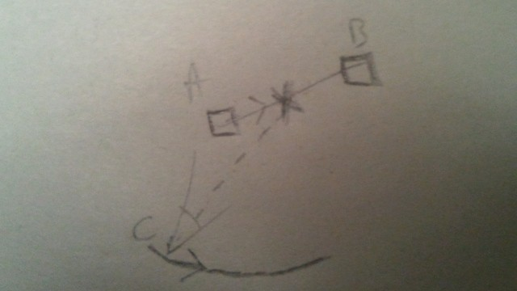
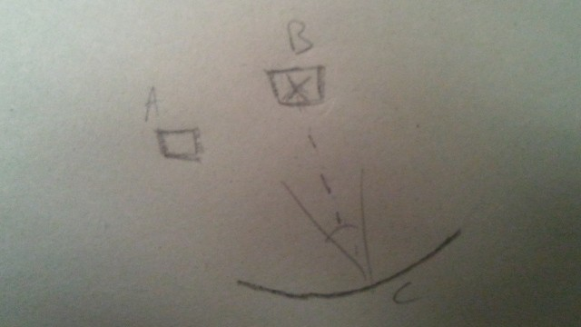
The idea is simple. Let's say a user selects the item B . When selected, the camera moves from its current viewpoint to the chosen item. The position of the camera (C) is in orbit relative to the selected item. Basically I used a lookat matrix from the camera position (C) to the target item. To create the camera motion when moving from one item to another, I interpolated the target position (from A to B) and generated a rotation around this interpolated point (X) during the animation. I added some constraints like the distance from the target point and some limits in the rotation to keep the camera position in range (like if we would see the item from a 3rd person). Check out this experiment (use 'del' key to go to previous level).
This idea ended up being too geeky, so we tried out something more popular and surrounded by more hype. And therein was born the idea of displaying tweets with 3D. A first try was to iterate on something like tweet deck but we wanted something that would be more responsive and with eye candy features... the first ugly experiment was to render tweets in a canvas and to use them as texture in 3D. We ended up dropping this idea and instead decided to show tweets geo-localized on the earth.
The last idea we had is the current incarnation of the globe tweeter. To make the globe I used 3 data files from natural earth data
- 110m admin 0 countries.shp contains the polygons of countries
- 110m coastline.shp contains only the coastline (meaning lines around oceans)
- 110m admin 0 boundary lines land.shp contains the lines inside land boundaries
As you can see, those data are flat and need to be projected on a sphere. Before projecting those data, however, I had to tesselate the triangles in order to have enough vertex to project a clean shape on the sphere. For this I have created a tool called 'grid'. It tessellates the input shape with a grid. It's a kind of boolean union operation.
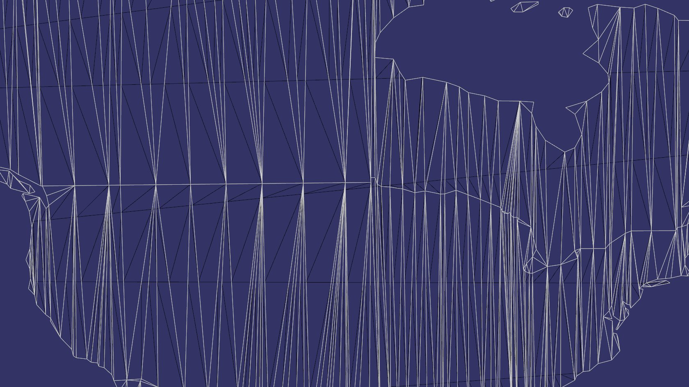
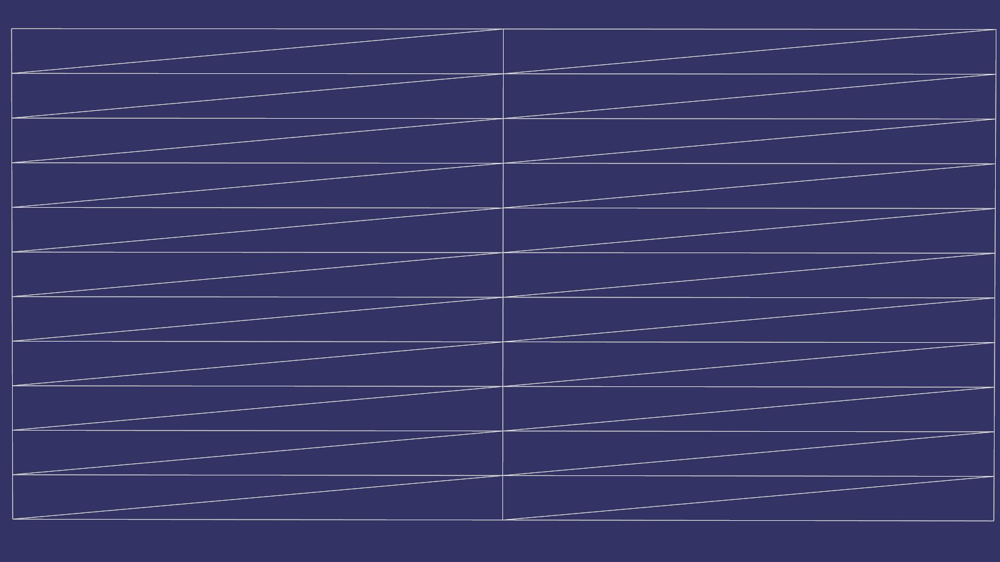
Above on the left, you can see the white model that is the original '110m admin 0 countries.shp'. The black model is the same model but tesselated a bit more to fit more closely on the sphere. On the right is the model (grid) use to tessellate the original '110m admin 0 countries.shp'. The idea is to add subdivisions on the height section of the model.
Once the data is subdivided enough, I created a tool to project each vertex onto a sphere using the standard WGS84 projection. You can see a webgl version of the projected model by clicking on the picture.
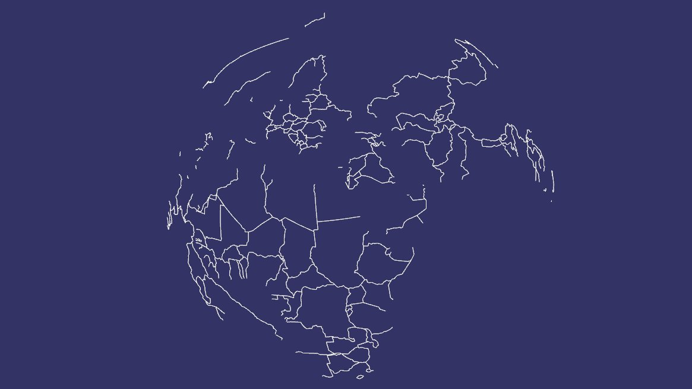
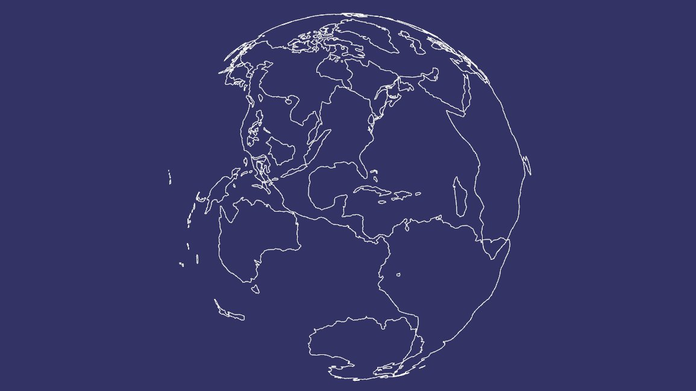
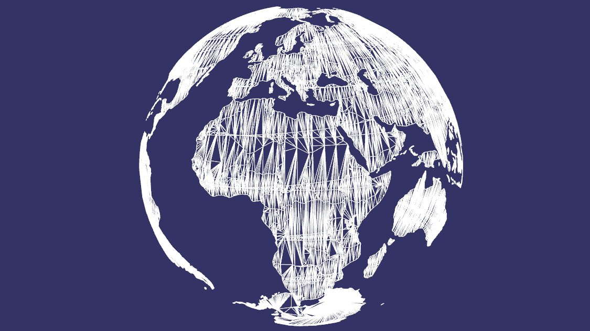
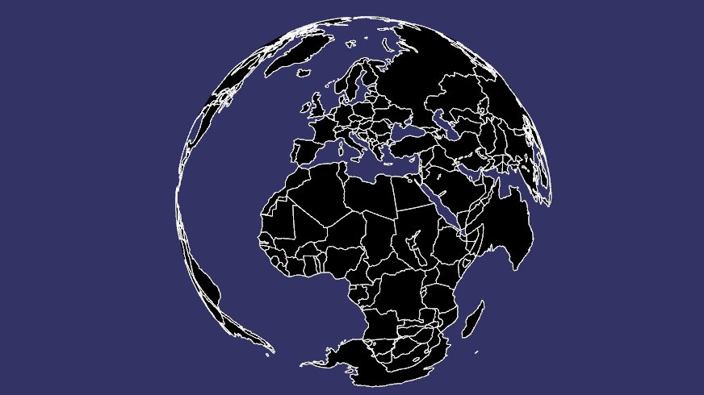
Once the data below were ready we selected a nice color for each model. On the demo I drew the globe in two passes. The first pass drew back faces of '110m admin 0 countries' with 'back color' and the second drew the front faces with 'front color'. It was necessary to have transparency of the globe because of the blending mode 'One Minus Src Alpha'.
The Final result looks like this
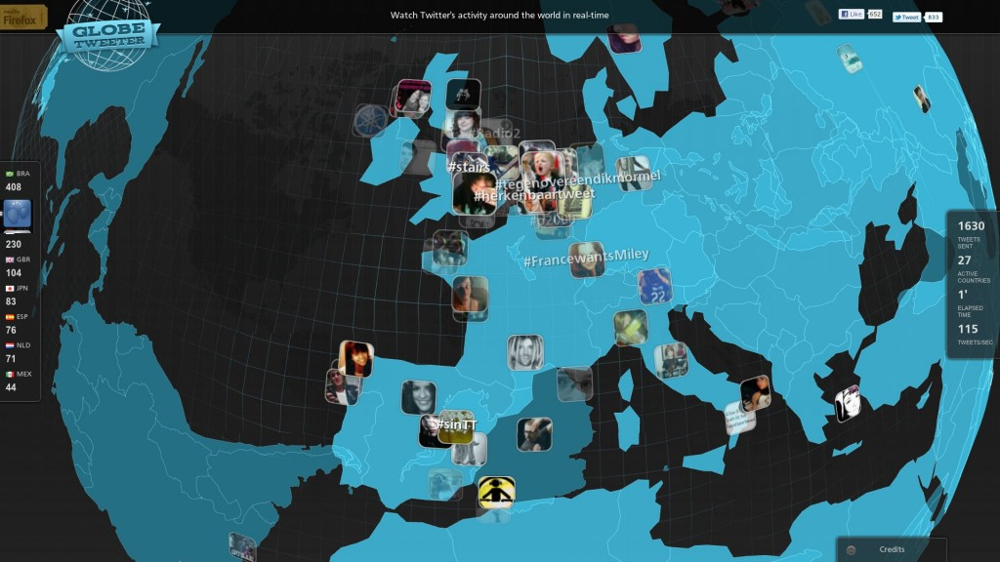
SceneGraph representation
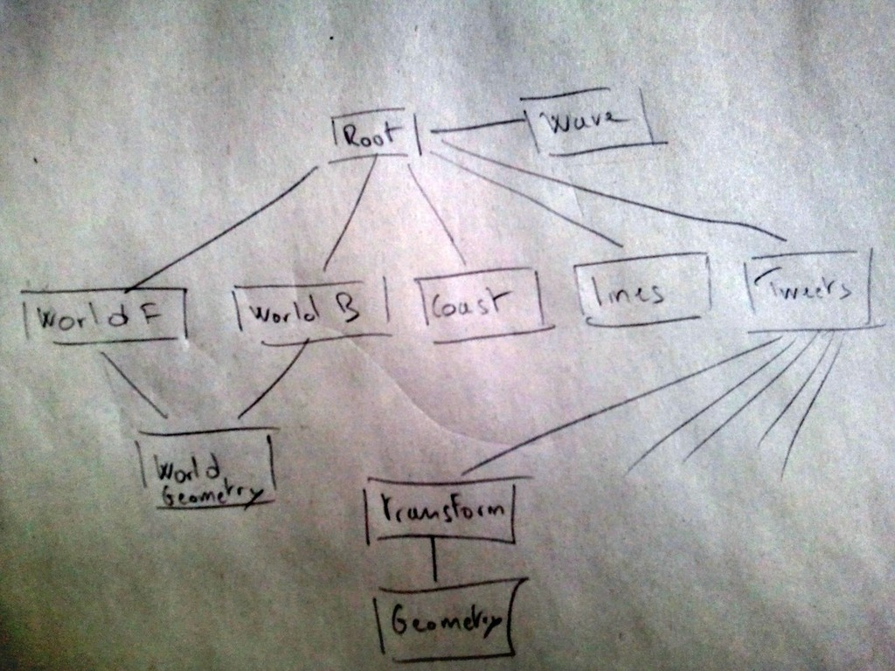
Wave
To add some details about twitter activity I setup a simple wave physics simulation that produces waves where tweets appear. The algorithm to produce the waves is explained here. To accomplish this I used two small hidden canvases with a size of 128x64 , I used small canvases because the computation is done on javascsipt and can be expensive. The update of waves was updated every 1/30 seconds. The update function did the following operations:
- Convert tweets locations into source wave in the canvas.
- Do the physics computation and store the result into the current canvas.
- Upload the current canvas as texture to use in the vertex shader. The vertex shader used this texture as a heightmap. To understand better how the heightmap works you can see here the original model without waves.
Vertex Shader
#ifdef GL_ES
precision highp float;
#endif
attribute vec3 Vertex;
attribute vec3 TexCoord0;
uniform mat4 ModelViewMatrix;
uniform mat4 ProjectionMatrix;
uniform mat4 NormalMatrix;
uniform float scale;
uniform sampler2D Texture0;
varying float height;
float maxHeight = 1400000.0;
void main(void) {
vec4 color = texture2D( Texture0, TexCoord0.xy);
height = color[0];
vec3 normal = normalize(Vertex);
vec3 normalTransformed = vec3(NormalMatrix * vec4(normal,0.0));
float dotComputed = dot(normalTransformed, vec3(0,0,1));
height *= max(0.0, dotComputed);
vec4 vrt = vec4(Vertex + normal * ( height * maxHeight * scale),1.0);
gl_Position = ProjectionMatrix * ModelViewMatrix * vrt;
height *= 5.0 * scale;
}
Fragment Shader
#ifdef GL_ES
precision highp float;
#endif
uniform vec4 fragColor;
varying float height;
void main(void) {
gl_FragColor = fragColor * height;
}
This shader is applied on a regular grid model projected on the sphere as explained before but this time the grid has a better resolution. Some of you will not see the relief of the waves because some webgl implementation does not expose texture unit on the vertex shader. Therefore as a work around I made another shader that does not move the vertexes in the vertex shader. Instead it only changes the color of the vertexes. You can read more about this issue on the Angle project.
Vertex Shader
#ifdef GL_ES
precision highp float;
#endif
attribute vec3 Vertex;
attribute vec3 TexCoord0;
uniform mat4 ModelViewMatrix;
uniform mat4 ProjectionMatrix;
uniform mat4 NormalMatrix;
varying float dotComputed;
varying vec2 TexCoordFragment;
void main(void) {
TexCoordFragment = TexCoord0.xy;
vec3 normal = normalize(Vertex);
vec3 normalTransformed = vec3(NormalMatrix * vec4(normal,0.0));
dotComputed = max(0.0, dot(normalTransformed, vec3(0,0,1)));
if (dotComputed > 0.001) {
dotComputed = 1.0;
}
gl_Position = ProjectionMatrix * ModelViewMatrix * vec4(Vertex, 1);
}
Fragment Shader
#ifdef GL_ES
precision highp float;
#endif
uniform sampler2D Texture0;
uniform vec4 fragColor;
uniform float scale;
varying float dotComputed;
varying vec2 TexCoordFragment;
void main(void) {
vec4 color = texture2D( Texture0, TexCoordFragment.xy);
gl_FragColor = fragColor * min(2.0*dotComputed * color.x, 0.999999);
}
Yes it's a bit sad, I have seen this issue lately ... :( . As conclusion this effect works well but it takes too much cpu in javascript/canvas, I should have tried a different effect that was less cpu intensive. Have a look at this video if you can't see the waves's relief.
Tweets
Tweets are displayed with the avatar image with simple quad oriented and positioned on the sphere from latitude/longitude. To add a nice border around the image I used a blending operation in the canvas with the following image.
Finally to have a nice animation when a tweet appears and disappears, I used an EaseInQuad function for the color, and EaseOutElastic for the scale component.
EaseInQuad = function(t) { return (t*t); };
EaseOutElastic = function(t) { return Math.pow(2.0, -10.0*t) *
Math.sin((t-0.3/4.0) *
(2.0*Math.PI) / 0.3) + 1.0; };
Zooming to the earth made tweet really huge related to the screen. To prevent this effect I introduced a scale factor that depends on the camera altitude. The full code to update a tweet looks like this
update: function(node, nv) {
var ratio = 0;
var currentTime = nv.getFrameStamp().getSimulationTime();
if (node.startTime === undefined) {
node.startTime = currentTime;
if (node.duration === undefined) {
node.duration = 5.0;
}
}
var dt = currentTime - node.startTime;
if (dt > node.duration) {
node.setNodeMask(0);
return;
}
ratio = dt/node.duration;
if (node.originalMatrix) {
var scale;
if (dt > 1.0) {
scale = 1.0;
} else {
scale = osgAnimation.EaseOutElastic(dt);
}
scale *= (this.manipulator.height/this.WGS_84_RADIUS_EQUATOR);
if (this.manipulator.height > this.limit) {
var limitConst = 0.8/(2.5*this.WGS_84_RADIUS_EQUATOR-this.limit);
var rr = 1.0 - (this.manipulator.height-this.limit) * limitConst;
scale *= rr;
}
var scaleMatrix = osg.Matrix.makeScale(scale, scale, scale);
node.setMatrix(osg.Matrix.mult(node.originalMatrix, scaleMatrix));
}
var value = (1.0 - osgAnimation.EaseInQuad(ratio));
var uniform = node.uniform;
var c = [value, value, value, value];
uniform.set(c);
node.traverse(nv);
}
NodeJS
The server responsible for sending tweets to the clients is done with nodejs. I used twitter-node, socket.io, and express modules to build the server. The code is really short so you can have a look on the server directly. You can get the server code here and improve it :) A big hug to proppy who bootstraps the nodejs server \o/
Stats
The first graph shows the number of connections per day. There is a big spike when the news was broadcasted. The second graph shows the number of connections per day but with a smaller scale and the last graph shows the cumulated number of connections.
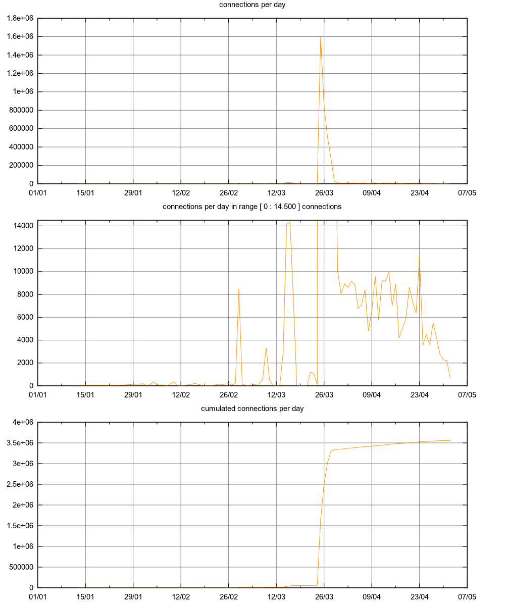
Links
- video Firefox 4 3D WebGL Demo - GlobeTweeter
- video GlobeTweeter--Behind the Making of the Demo
- video GlobeTweeter
- video WebGL globetweeter demo Firefox 4.0
- globe tweeter demo
- globe tweeter source code
- globe tweeter server source code
- osgjs
- sketchfab to convert / display model on the web
- conf at parisjs#6
A big thanks to Paul Rouget from Mozilla who made this demo possible and Guillaume Lecollinet who designed this demo.